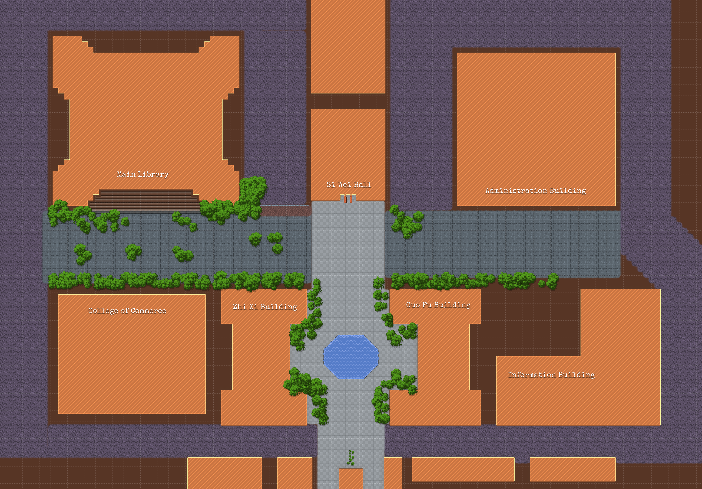

歡迎踏上政大四維道！請登錄冒險者名冊並選擇所屬學院職業，進入地圖後可用「方向鍵 / 十字鍵」操控像素勇者自由探索各大企業村莊：
可選擇雙主修或輔系；地圖會同時標示兩種職業推薦的產業。
學號將顯示於核銷畫面供工作人員確認。遊戲進度會自動保存在此瀏覽器，重新整理後可繼續冒險。

地圖建築座標
請移動角色靠近任一建築物或點擊地圖上的展區圖標！
請至四維堂或噴水池服務台出示此畫面，確認動態時間戳印後由工作人員點擊核銷按鈕。